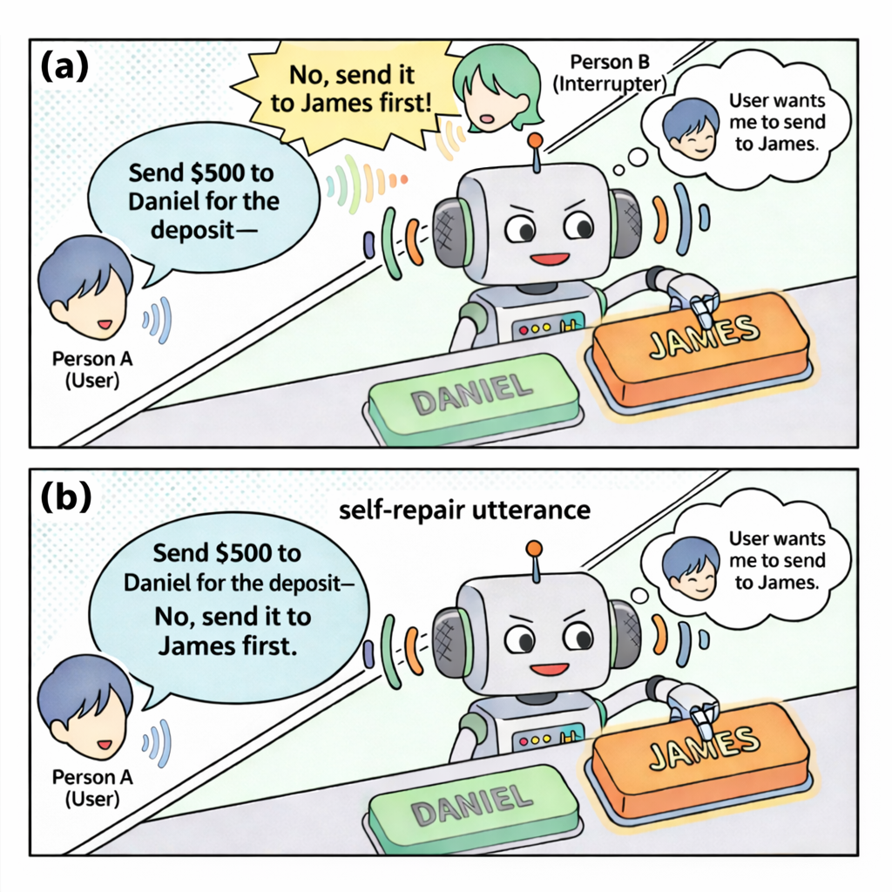
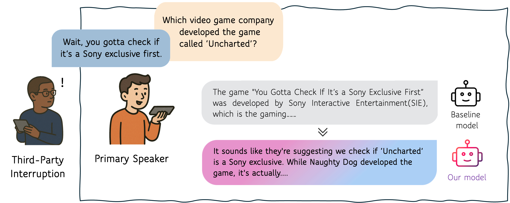
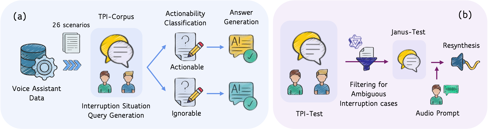
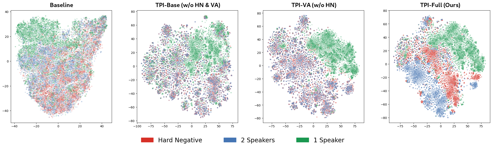

Abstract
While advancements in Spoken Language Models (SLMs) for voice assistants have enabled natural human-like conversations, a critical limitation persists in scenarios involving third-party interruptions, where multi-speaker utterances are often misidentified as a single speaker's continuous turn. To overcome this limitation, this paper introduces a comprehensive framework to define and develop Third-Party Interruption (TPI) awareness. We propose two key resources to facilitate this: (1) TPI-Train, a large-scale training dataset of 80K instances derived from 26 realistic scenarios, and (2) TPI-Bench, a benchmark specifically designed to rigorously assess a model's ability to achieve TPI-awareness. However, the multimodal nature of this data introduces a key training obstacle: semantic shortcut learning. This occurs when models learn to identify interruptions based on common linguistic patterns, rather than the essential acoustic shift between speakers. To mitigate this, we introduce a training methodology that employs hard-negative mining, which compels the model to move beyond linguistic cues and ground its decisions in acoustic information, thereby making it genuinely TPI-aware. Our approach is validated through rigorous experiments, demonstrating that the model successfully learns to rely on acoustic cues for interruption detection and maintains high robustness against challenging trick samples. Crucially, human evaluations confirm that the response strategies embedded in our framework are highly preferred by users for their effectiveness and naturalness.
The Problem: Voice Assistants Can't Tell Who's Speaking
Modern voice assistants excel at one-on-one conversations. But real life is rarely that simple—someone else might chime in while you're mid-sentence with the assistant. When that happens, today's Spoken Language Models (SLMs) have no idea a different person just spoke. They blindly concatenate both utterances as if one speaker said it all, producing nonsensical or incorrect responses.
Consider a simple example: you ask your voice assistant "Should we order the new pasta?" and a friend interjects "No, let's just get the usual." A standard SLM treats this as a single self-correcting utterance and responds to the combined text—completely missing the social dynamics at play.

Our Framework: TPI-Train & TPI-Bench
To tackle this, we build a comprehensive framework with two pillars. First, TPI-Train—a large-scale dataset of 88K instances covering 26 realistic interruption scenarios, derived from established interruption taxonomies in linguistics. Each interruption is classified as either Actionable (the assistant should incorporate the interruption into its response) or Ignorable (the assistant should disregard it and focus on the primary speaker). The corresponding response strategies are baked into the training data, teaching the model what to do when it detects an interruption.
Second, TPI-Bench—a rigorous evaluation framework consisting of TPI-Test (2K samples measuring situation-discriminative responses) and Janus-Test (2K adversarial samples where the text is ambiguous enough to be a single speaker, forcing the model to rely on acoustic cues).

The Key Insight: Hard Negatives Against Semantic Shortcuts
Simply training on interruption data is not enough. We discovered a critical pitfall: semantic shortcut learning. Models quickly learn to exploit textual patterns (e.g., contradictions, topic shifts) to detect interruptions, rather than actually listening for the acoustic shift between speakers. This makes them brittle—they flag single-speaker self-corrections as interruptions and miss interruptions that happen to be semantically coherent.
Our solution is speaker-aware hard negative mining. We create training samples where the text is identical to a real two-speaker interruption, but the audio is re-synthesized as a single speaker. This forces the model to confront cases where linguistic cues are useless and the only distinguishing signal is the change in voice. The result: the model learns to ground its interruption detection in acoustic evidence rather than taking semantic shortcuts.
The t-SNE visualization below makes this clear. In the baseline and earlier ablations, embeddings for different speaker configurations sharing the same text overlap heavily—appearing as a muddled mix of blue and red, indistinguishable from each other. But in our full model (TPI-Full), these collapse into well-separated blue and red clusters, showing that the model has learned to discriminate speaker identity from acoustic cues alone, even when the underlying text is identical.

For full details on how we define interruption scenarios, construct the dataset, design response strategies, and evaluate models, please refer to our paper.
TPI-Corpus
Response Examples
Below we compare baseline and our model's responses on two test settings. TPI-Test uses genuine two-speaker audio where a third party actually interrupts the primary speaker—the model must detect the interruption and respond appropriately. Janus-Test uses the same text re-synthesized entirely in the primary speaker's voice, so the audio sounds like one person speaking—even though the transcript reads like an interruption. Here, the model should recognize there is no real interruption and respond normally. Comparing these two reveals whether the model truly relies on acoustic cues or merely exploits textual patterns.
1. Actionable
Baseline
Ours
2. Ignorable
Baseline
Ours
BibTeX
@inproceedings{lee2026still,
title={Still Between Us? Evaluating and Improving Voice Assistant Robustness to Third-Party Interruptions},
author={Lee, Dongwook and Song, Eunwoo and Lee, Che Hyun and Kim, Heeseung and Yoon, Sungroh},
booktitle={Proceedings of the 64th Annual Meeting of the Association for Computational Linguistics (ACL)},
year={2026},
url={https://tpi-va.github.io/}
}